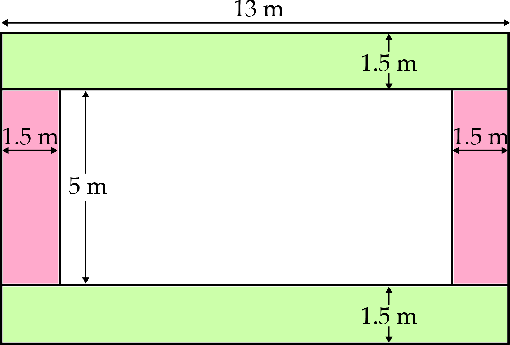
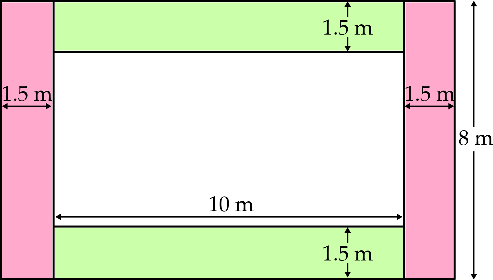
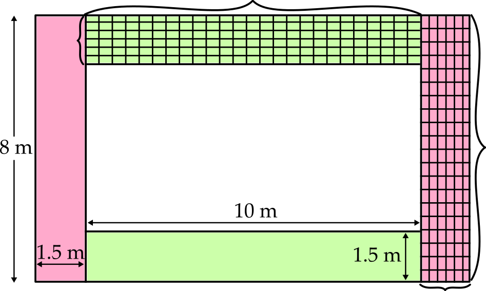
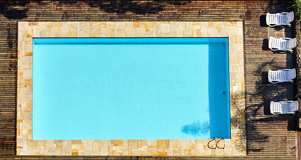

Problem
Piscine is replacing the paving stones around her inground pool. Her pool is \(10\) m by \(5\) m, and is surrounded by a \(1.5\) m border of paving stones.
How many square metres of paving stones will she need in total?
If each paving stone is \(25\) cm by \(40\) cm, in theory, how many paving stones will she need?
Will your answer in part b) actually be enough? Try fitting the stones in the space to see whether Piscine can complete the border with exactly that number of stones, or whether there will be waste, requiring some extras.
The area of paving stones needed can be calculated in several ways. In the two methods shown below, we divide the area into four rectangles.
Method 1:
Top and Bottom Areas:
\((13 \times 1.5) \times 2 = 39\text{ m}^2\)Side Areas:
\((5 \times 1.5) \times 2 = 15\text{ m}^2\)Total Area:
\(39+15=54\text{ m}^2\)Method 2:

Top and Bottom Areas:
\((10 \times 1.5) \times 2 = 30\text{ m}^2\)Side Areas:
\((8 \times 1.5) \times 2 = 24\text{ m}^2\)Total Area:
\(30+24=54\text{ m}^2\)Either way, we see that Piscine needs 54 m\(^2\) of paving stones.
First we need to calculate the area of each paving stone in \(\text{m}^2\). Since \(1 \text{ cm} = 0.01 \text{ m}\), each paving stone is 0.25 m by 0.4 m. So the area of each paving stone is \[0.25 \times 0.4 = 0.1 \text{ m}^2\] To calculate the number of paving stones needed, we can divide the total area we calculated in part a) by the area of each paving stone. Thus, the number of paving stones needed is \(54 \div 0.1 = 540\) tiles.
If we divide the area as shown in Method 2 from part a), then the 540 paving stones will fit exactly in the space, as shown below.

In the top area: \(10 \div 0.4=25\), so \(25\) paving stones placed end to end (with their short sides touching) will span the length of the area.
In the top area: \(1.5 \div 0.25=6\), so \(6\) paving stones placed side by side (with their long sides touching) will span the width of the area.
In a side area: \(8 \div 0.4=20\), so \(20\) paving stones placed end to end (with their short sides touching) will span the length of the area.
In a side area: \(1.5 \div 0.25=6\), so \(6\) paving stones placed side by side (with their long sides touching) will span the width of the area.
The paving stones may look a bit unusual, since they are placed in different directions so won’t line up at the corners of the pool. However, the 1.5 m width is only evenly divisible by 0.25 m, not by 0.4 m, so for no waste, we’re stuck with a solution where the paving stones are not all in the same direction.
